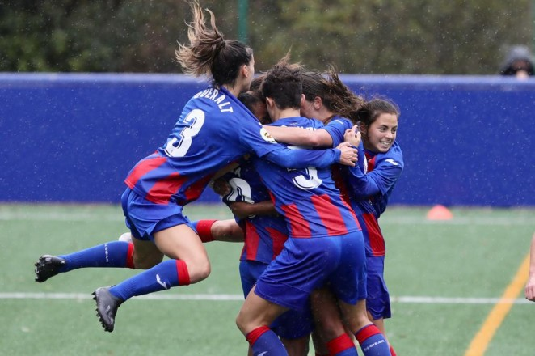
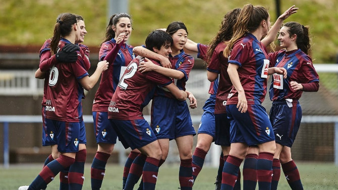
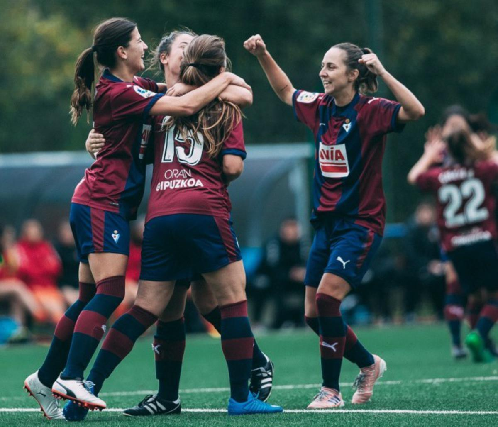

<!DOCTYPE html>
<html lang="es"></html>
<head>
    <meta charset="UTF-8">
    <meta name="viewport" content="width=device-width, initial-scale 1.0">
    <meta name="author" content="Aina Muñoz Fernández">
    <meta name="generator" content="Visual Studio Code">
    <meta name="description" content="Galeria de fotos y videos del equipo femenino del Eibar FC">
    <meta name="keywords" content="fútbol femenino eibar liga iberdrola clasificación">
    <title>Galeria - SD Eibar Femenino</title>
</head>

<body>
    
    <div class="headIberdrola">
        <header>
            <a href="../index.html"><h1>SD Eibar Femenino </h1></a>
        </header>
         <!--imagen liga iberdrola-->
         
    </div>

    <nav class="uppernav">
        <!--Menú de navegación de classificacion / resultados /galeria-->
        <a href="./classif.html">Clasificación</a> |
        <a href="./resultats.html">Resultados</a> |
        <a href="./galeria.html">Galeria</a> 
    </nav>
    <main>
        
        <article>
        <!--Imágenes-->
        <section class="galeria" id="galimag">
            <h2>Galeria de imágenes</h2>
            
            
            
            
        </section>
        <!--Vídeos de youtube-->
        <section class="galeria" id="galvideos">
            <h2>Galeria de vídeos</h2>
            <h3>Women's Eibar keep flying high</h3>
            <iframe width="560" height="315" src="https://www.youtube.com/embed/y3rp1-jmD2w" frameborder="0" 
            allow="accelerometer; autoplay; clipboard-write; encrypted-media; gyroscope; picture-in-picture" 
            allowfullscreen></iframe>
            <h3>El primer equipo femenino del Eibar sube a Primera División!</h3>
            <iframe width="560" height="315" src="https://www.youtube.com/embed/tPmo4jBBs6M" frameborder="0"
             allow="accelerometer; autoplay; clipboard-write; encrypted-media; gyroscope; picture-in-picture"
              allowfullscreen></iframe>
        </section>
        </article>
     
        
    </main>

</body>

<footer>
    <!--aquí va tema copyright + info contacto + redes sociales-->
    <!--esta lista tendrá que ir inline-->
    <ul class="contact"> 
        <li>&copy; SD Eibar FC Femenino</li>
        <li><address>Ipurua Kalea 2, 20600 Eibar (Gipuzkoa)</address></li>
        <li>Telf. 943 201 831</li>
        <li>Fax. 943 202 606</li>
        <li><a href="https://www.instagram.com/sdeibar/?hl=es" target="_blank">
            
        </a></li>
        <li><a href="https://www.facebook.com/sdeibar/" target="_blank">
            
        </a></li>
        <li><a href="https://twitter.com/SDEibar" target="_blank">
            
        </a></li>
        <li><a href="https://www.youtube.com/channel/UClHd-P6Bfkm1dlUkMdkTemg" target="_blank">
            
        </a> </li>
      </ul> 
     
</footer>